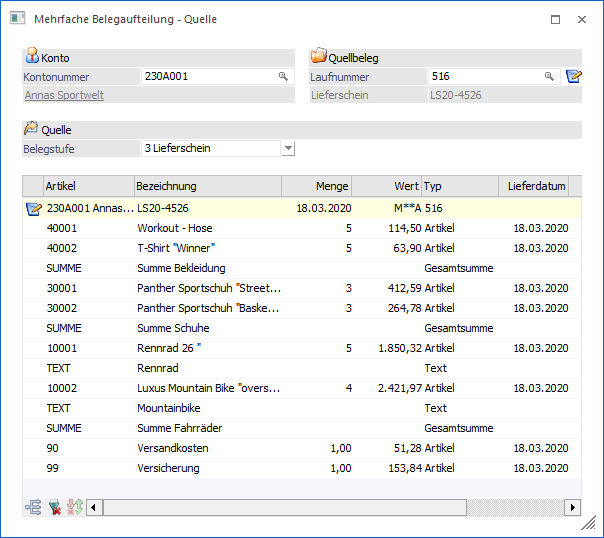
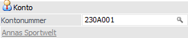
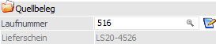
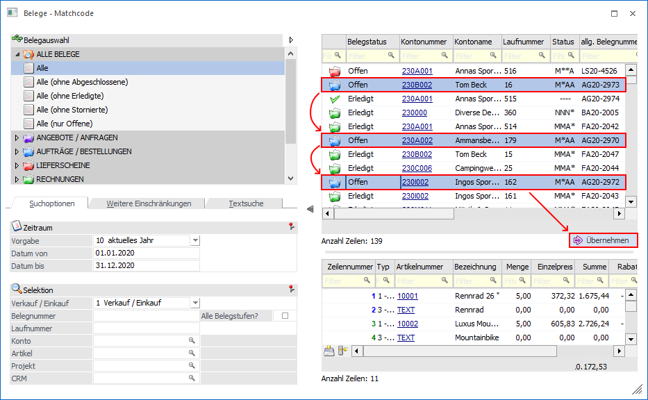
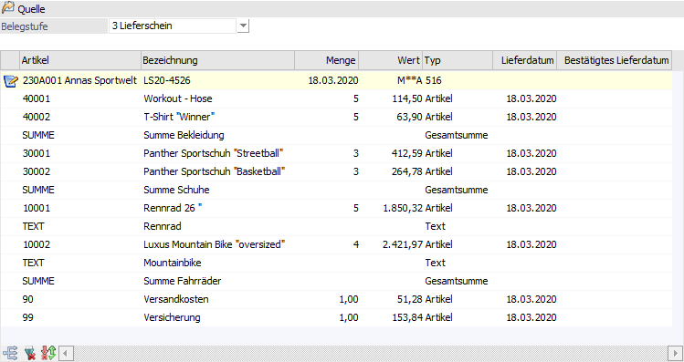
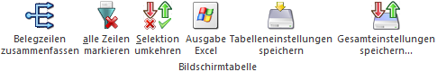
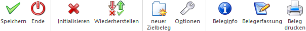
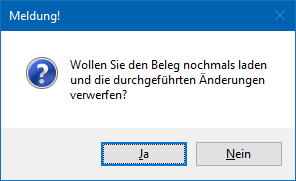

In diesem Fenster kann die "Basis" ausgewählt werden, d.h. hier kann angegeben werden, aus welchem Beleg bzw. Belegen die Daten verwendet werden sollen.
Hinweis
Neben der (manuellen) Eingabe der Kontonummer und der Laufnummer können Belege auch mittels Drag & Drop aus dem Belege-Matchcode, dem Belegmanagement (Register "Detail") oder dem Menüpunkt "Belege" übernommen werden.

Im Quellbereich können folgende Eingaben vorgenommen werden:
Konto

Ø Kontonummer
An dieser Stelle kann die Eingabe der Kontonummer, bei welcher der "Ausgangsbeleg" gespeichert ist, erfolgen. Unterhalb der Kontonummer wird der Namen des gewählten Kontos angezeigt.
Quellbeleg

Ø Laufnummer
Ist beim ausgewählten Konto nur ein "nicht gerechneter/nicht gedruckter" Beleg vorhanden, so wird dieser automatisch angezeigt. Ansonsten kann hier ein beliebiger Beleg ausgewählt werden (ausgenommen sind hier stornierte bzw. erledigte Belege). Folgende Sondertasten stehen an dieser Stelle zur Verfügung:
ü F3 / SHIFT+F3
Durch Anwahl der
F3-Taste kann der letzte Beleg (Kontonummer - Laufnummer) übernommen werden,
wobei insgesamt die letzten 20 Belege zur Verfügung stehen (unabhängig vom ggfs.
zuvor erfassten Konto). Wird die Eingabe mit der Enter-Taste bestätigt, so wird
der Beleg in der entsprechenden Belegstufe sofort geladen. Mit der
Tastenkombination SHIFT+F3 kann die Reihenfolge umgekehrt werden.
ü F9
Durch Drücker der Taste F9
wird das Programm "Belege - Matchcode" geöffnet. Neben der Auswahl eines
einzelnen Belegs können auch mehrere Belege selektiert und übernommen werden,
wobei die selektierten Belege von der gleichen Belegstufe sein müssen (die
Funktion wird in der WinLine mobile nicht unterstützt). Zur Übernahme von
mehreren Belegen steht hierfür der Button "Übernehmen" zur
Verfügung.

ü  - Button "Alle Belege übernehmen"
- Button "Alle Belege übernehmen"
Durch
Anklicken des Buttons "Alle Belege übernehmen" werden alle vorhandenen Belege
übernommen, welche den Status gemäß der Option "Quellbelegstufe für "Alle Belege
übernehmen" - Belegstufe" aufweisen (siehe Button "Optionen"). Herbei wird ein
ggfs. zuvor eingegebenes Konto berücksichtigt.
Quelle

Nach der Auswahl des Belegs bzw. der Belege werden die entsprechenden Zeilen in die Tabelle "Quelle" gefüllt.
Hinweise
ü Handelsstücklistenartikel werden in diesem Fenster nicht angezeigt und können dadurch auch nicht bearbeitet / verwendet werden.
ü Makroartikel können immer nur komplett übernommen werden (es können nicht Teile aus einem Makro-Artikel herausgelöst werden).
ü Ausprägungsartikel können nur komplett übernommen werden - eine Aufteilung einzelner Ausprägungen ist nicht möglich.
ü Workflows die z.B. über die Belegart gesteuert werden, werden nicht automatisch ausgeführt. Damit ein Workflow laut Belegart ausgeführt wird, muss der Zielbeleg über die Belegerfassung aufgerufen werden.
Ø Belegstufe
Die hier hinterlegte Belegstufe dient für den Aufruf des Belegerfassens bzw. des Belegdrucks. Hiermit kann entschieden werden, welche Belegstufe für den Quellbeleg, beim Aufruf des Belegerfassens bzw. beim Belegdruck, herangezogen werden soll.
Ø Tabelle "Quellbelegzeilen"
In der Tabelle sind folgende Informationen ersichtlich:
ü Belegkopfinformationen
Wenn in
der ersten Spalte der Zeile das Symbol angezeigt wird, so handelt es sich um
eine Belegkopfzeile mit den folgenden Informationen:
ü Kontonummer und Kontoname
ü Belegnummer
ü Belegdatum
ü Status (Bearbeitungsstatus)
ü Laufnummer
ü Artikelzeilen
In den
Artikelzeilen werden die folgenden Informationen dargestellt:
ü Artikelnummer
ü Bezeichnung
ü Menge
ü Wert
ü Typ (Artikeltyp)
ü Lieferdatum
ü Lieferdatum 2
Tabellenbuttons

Ø Belegzeilen zusammenfassen
Durch Anwählen dieses Buttons können mehrere Belege auf einen Beleg "zusammengefasst" werden. Der Button steht hierbei nur zur Verfügung, wenn sich in der Quelltabelle Belege des Typs "nicht gerechnet / nicht gedruckte Belege" oder "offene Angebote" befinden.
Ø alle Zeilen markieren
Mit der Tastenkombination ALT + A oder durch Anklicken des Buttons werden alle Zeilen in der Tabelle markiert.
Ø Selektion umkehren (nur bei aktivierter Option "Mehrfachselektion in der Tabelle - Auswahlcheckbox")
Durch Anwählen des "Selektion umkehren"-Buttons werden aktivierte Zeilen deaktiviert und deaktivierte Zeilen aktiviert.
Ø Ausgabe Excel
Durch Anwahl des Buttons "Ausgabe Excel" wird der Inhalt der Tabelle an Microsoft Excel übergeben.
Ø Tabelleneinstellungen speichern
Die Spalten einer Tabelle können grundsätzlich an beliebige Positionen verschoben, bzw. in der Breite entsprechend angepasst werden. Durch Anwahl des Buttons "Tabelleneinstellungen speichern" werden die Einstellungen benutzerspezifisch gespeichert und bei dem nächsten Aufruf des Programmpunktes wieder vorgeschlagen.
Ø Gesamteinstellungen speichern
Im Gegensatz zu "Tabelleneinstellungen speichern" können mit "Gesamteinstellungen speichern" mehrere Tabellenaufbauten gespeichert und nach Wunsch geladen werden. Zusätzlich werden Sonderfunktionen der Tabelle (z.B. "Spalte gruppieren") ebenfalls bei der Speicherung bedacht.
Buttons

Ø Speichern
Durch Drücken des Buttons "Speichern " bzw. der Taste F5 werden sowohl die Belege im Zielfenster als auch die Belege im Quellfenster gemäß Einstellung gespeichert. Befindet sich im Quellfenster nur ein Beleg, so werden beide Belege in einem Info-Formular angezeigt und können bearbeitet bzw. gedruckt werden. Befinden sich mehrere Belege im Quellfenster, so bleibt in diesem Fall die Tabelle erhalten.
Hinweis
Je nach Einstellungen in den Optionen werden jene Belege, aus denen ggfs. alle Zeilen verschoben wurden, als erledigte Belege gekennzeichnet.
Ø Ende
Durch Anwählen des Buttons "Ende" bzw. der Taste F5 wird das Fenster - nach Bestätigung einer Sicherheitsabfrage - geschlossen.
Ø Initialisieren
Mit Hilfe des Buttons "Initialisieren" bzw. der Taste F4 werden alle vorgenommen Einstellungen rückgängig gemacht. Das Fenster wird so dargestellt, als ob der Menüpunkt neu aufgerufen worden wäre.
Ø Wiederherstellen
Durch Anklicken dieses Buttons werden alle nicht gespeicherten Änderungen rückgängig gemacht und der Quellbeleg / die Quellbelege neu geladen. Dazu wird folgende Meldung ausgegeben:

Ø neuer Zielbeleg
Durch Anwahl dieses Buttons wird ein neues "Mehrfache Belegaufteilung - Zielbeleg"-Fenster geöffnet, wobei maximal 10 Fenster möglich sind.
Ø Optionen
Mit Hilfe dieses Buttons wird der Bereich Optionen geöffnet, in dem das Programmverhalten individualisiert werden kann.
Ø Beleginfo
Durch Anklicken des Buttons "Beleginfo" wird eine Vorschau des zu erstellenden Belegs angezeigt.
Ø Belegerfassung
Wenn der Button "Belegerfassung" angeklickt wird, dann werden alle bearbeiteten Belege gemäß den Einstellungen gespeichert. Im Anschluss wird der Beleg, in den alle Belegzeilen übergeleitet wurden, im Fenster "Belegerfassung" geöffnet.
Ø Beleg drucken
Durch Anklicken des Buttons "Beleg drucken" wird der Beleg in der gewählten Belegstufe gespeichert und anschließend gedruckt.